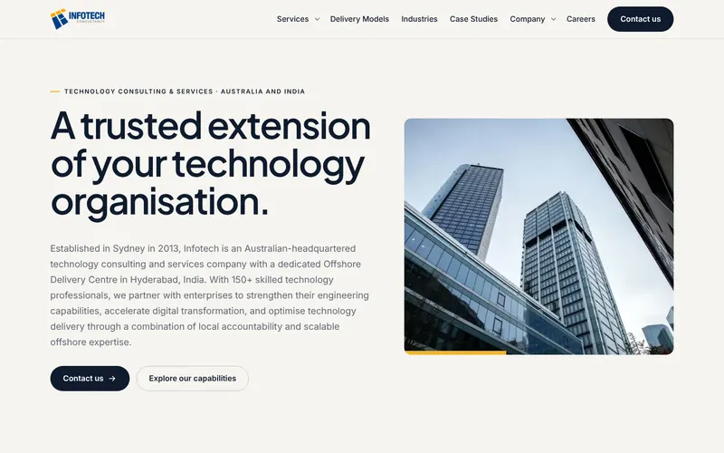
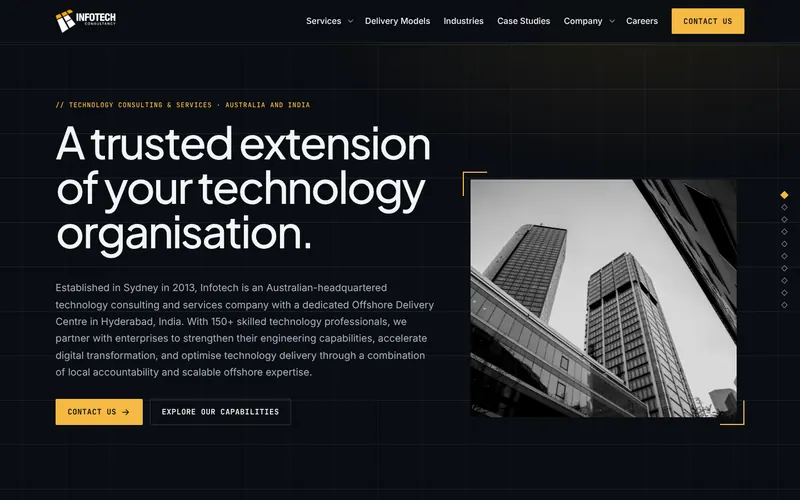
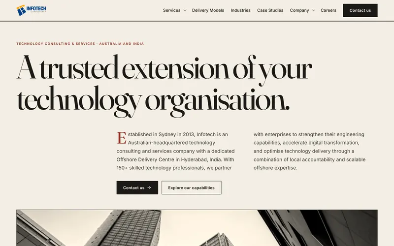
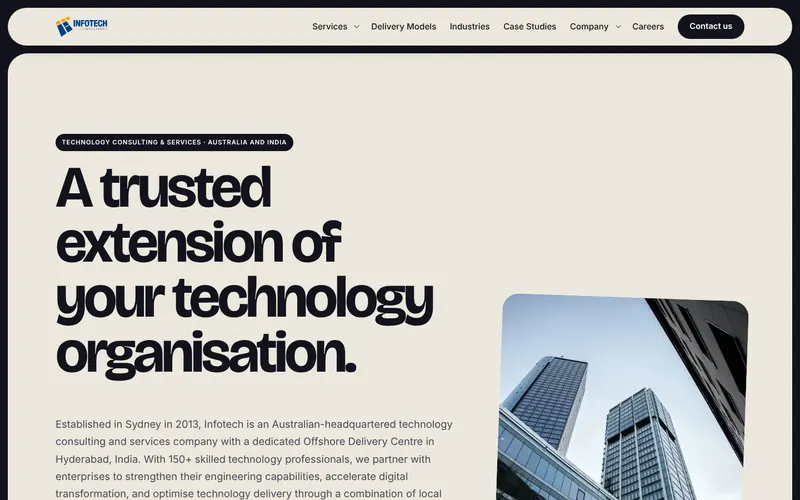
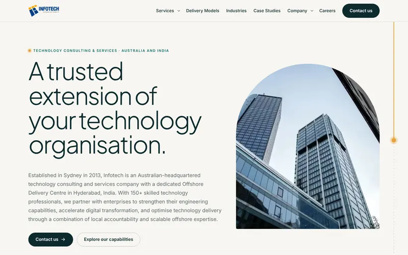

Infotech home page: five design directions
Same copy, links and section order in every version. Scroll each one, hover the lists and cards, and resize the window. To go live, rename the chosen file to index.html.

1Harbour
The current brand, sharpened. Shutter-reveal photography, a client row that drifts with the scroll, service rows that fill on hover, tilting case cards.

2Control Room
Dark and technical. Case studies pin and travel sideways, text lights up word by word, cards carry a cursor-following glow, a section rail tracks your place.

3Broadsheet
Editorial. Serif headlines, ruled columns that draw themselves in, a typographic services index, case-study columns moving at different speeds.

4Stack
Bold and colourful. Every section is a card that pins, then shrinks under the next one. Magnetic buttons, pills that flood with colour.

5Two Hubs
One line runs the whole page, onshore to offshore, drawn as you scroll. The service list highlights whichever row is at mid-screen.